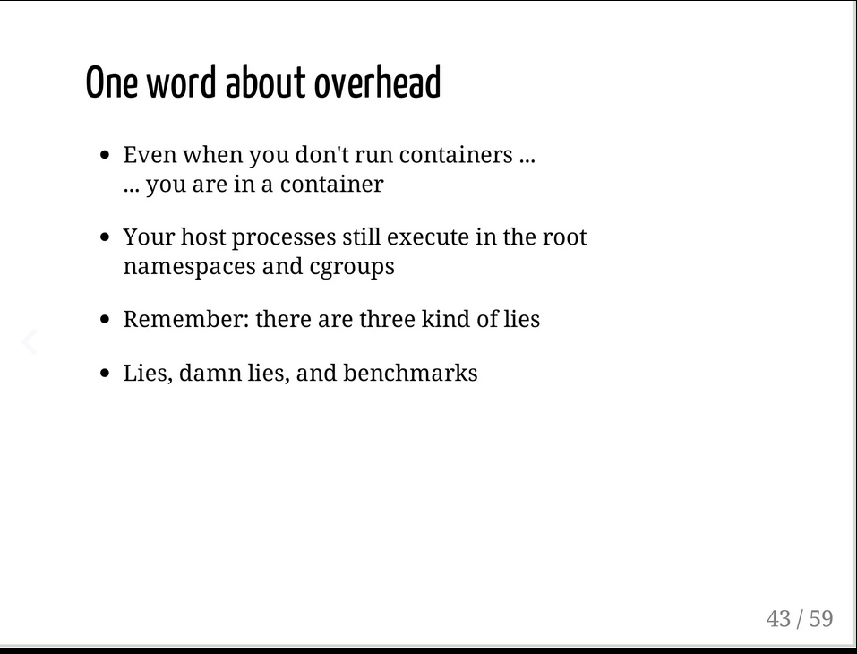

Notes around my failed idea of `Patching Kubernetes nodes with fixes without restarting the nodes`
Contents
This is an info dump for the failed idea codenamed suraj2.
Problem
- When a problem is encountered across nodes in a cluster, usually we need to update the AMI or AWS Launch Template so that new nodes start using the fix. This takes time because you have to wait until new nodes are up i.e., until your old nodes are replaced with new ones which contain the fix (let’s call this process node rotation)
- If you don’t want to wait until node rotation, one way to get around it is to manually tweak the node (i.e., login to the nodes manually and fix the problem by say upgrading the problematic package, restarting kubelet with a new param etc.,) but
- nodes are ephemeral in Kubernetes which means nodes with your manual changes might go down soon and new ones would come up which won’t have that change
- count of nodes might be too large to do it all manually. Not to mention high number of nodes mean higher possibility of some old node going down and a new one coming up
How do you execute a script on all the current running nodes and new nodes which might come up in the future safely without having to wait for node rotation?
Possible Solution 1: Can any existing tool be used for implementing the solution?
- https://github.com/mohatb/kubectl-exec supports executing commands on a node using
nsenter - https://github.com/kvaps/kubectl-node-shell similar but more stars
I don’t understand how either of them work completely but from what I understood, in both the cases, a pod with elevated privileges hooks onto what seems like host namespaces and executes the relevant commands.
Reading https://alexei-led.github.io/post/k8s_node_shell/
It is possible to use any Docker image with shell on board as a “host shell” container. There is one limitation, you should be aware of - it’s not possible to join mount namespace of target container (or host).
This helper script create a privileged nsenter pod in a host’s process and network namespaces, running nsenter with –all flag, joining all namespaces and cgroups and running a default shell as a superuser (with su - command).
-a, --all Enter all namespaces of the target process by the default /proc/[pid]/ns/* namespace paths. The default paths to the target process namespaces may be overwritten by namespace specific options (e.g., --all --mount=[path]).
https://man7.org/linux/man-pages/man1/nsenter.1.html . I am not sure how --all here equates to the host namespace.
A Linux system starts out with a single namespace of each type, used by all processes. Processes can create additional namespaces and join different namespaces.
https://en.wikipedia.org/wiki/Linux_namespaces
|
|
|
|
Looks like it works but I don’t understand exactly how/why.
kubectl node-shell does it slightly differently like this
|
|
kubectl exec does it slightly differently too. It is almost the same as kubectl node-shell but spawns a login shell instead.
|
|
What I don’t understand
- Can multiple processes have PID=1 i.e., if there are two processes in different cgroups/namespaces, can both of them have PID set as 1?
Yes, if the cgroups also uses process namespaces. Check 2 for more info. - What is the difference between namespaces and cgroups?
Looking at https://stackoverflow.com/questions/34820558/difference-between-cgroups-and-namespaces
While not technically part of the cgroups work, a related feature of the Linux kernel is namespace isolation, where groups of processes are separated such that they cannot “see” resources in other groups. For example, a PID namespace provides a separate enumeration of process identifiers within each namespace. Also available are mount, user, UTS, network and SysV IPC namespaces.
The PID namespace provides isolation for the allocation of process identifiers (PIDs), lists of processes and their details. While the new namespace is isolated from other siblings, processes in its “parent” namespace still see all processes in child namespaces—albeit with different PID numbers.[26]
https://en.wikipedia.org/wiki/Cgroups#Namespace_isolation

It seems like docker/other container runtimes running on K8s use both cgroups and namespaces. Everything in the OS runs under some root namespace(s).
4. If I do nsenter --target=1, why does it go to host system namespace instead of attaching itself to the current container namespace?
kubectl node-shell uses hostPID: true in the pod. It also uses hostNetwork: true in the pod
|
|
|
|
This image makes much more sense now:
- It seems like I can execute commands with leveraged permissions from the pod on the node and do whatever I want on the node. What is the need for putting things in the AMI then?
I guess it’s stability? Baking things into the AMI mean if I want to do anything in the node, it would be run as a part of AMI build process and I would know if there’s any problem with them (using say HashiCorp’spacker). Whereas, in case of executing the same thing on a running node runs a risk of destabilizing the node (in worse cases, making the node unusable). - Why is
--allequivalent to--mount --uts --pid --ipc --net? All indicates, all types of namespaces. Hence former and latter are one and the same
-a, –all Enter all namespaces of the target process by the default /proc/[pid]/ns/* namespace paths. The default paths to the target process namespaces may be overwritten by namespace specific options (e.g., –all –mount=[path]).
https://man7.org/linux/man-pages/man1/nsenter.1.html
Possible Solution 2: CLI and Webhook
- Listen to node creation event as a webhook in Kubernetes
- Anything that is specified as a script in a ConfigMap would be executed on the node before it gets created as a resource in Kubernetes
- The solution would allow targeting only specific nodes based on the label selector
- If the script fails, the webhook would support rolling back the change if the user provides a rollback script
https://excalidraw.com/#json=XnM_i5_IRZxGCs6aQA40G,qzS-E6BMx_qvFv2wezKWSg
CLI
We want to execute a particular script on all running nodes. Since this would be a one-time activity, CLI tool can be the preferred choice. This is very similar to how Ansible does things, only except in Kubernetes world.
Webhook
This is to take care of the case where after we have executed the CLI tool, we might see some new nodes come up. In that case, we would have to execute the script again. Webhook ensures we don’t need to do that.
Thoughts
- This solution is very similar to Ansible except it is Kubernetes aware
- It also makes node vulnerable to attacks since the user can write anything in their script.
- Tweaking something in the ConfigMap on the cluster could be potentially easier than tweaking the AMI build which would need more stringent approval process (and PR review) or tweaking the AWS Launch Template (you’d need permissions to tweak the launch template. At best there’s only one launch template for all the nodes but at worst there are multiple. Also, you’d have to figure the name of the launch template)
- This solution, if it works well, allows administrators to provide quick fixes to the node until a new AMI is rolled out. It reduces downtime and protects the SLA.
What happens if the script fails?
- The webhook will try to execute a rollback script
- If both the scripts fail, the webhook will create
Possible Solution 2: Wouldn't a controller be a good replacement for the CLI and the webhook?
The controller can login to the current running nodes, execute the script. If the script succeeds, all good. If it doesn’t, it stops executing the script, cordons and drains the node. If a new node comes up, the controller can do the same there as well. It doesn’t need to care about if the pods are running on the node or node. It just does its job and exits.
The controller can support a RolloutScript and RollbackScript resource (to undo the change in case RolloutScript does something bad). If in case the RolloutScript errors, the controller will stop, execute the RollbackScript and won’t execute the script on any other nodes. By default RolloutScript would execute on only one node. After the user confirms everything is good, they have to edit the RolloutScript resource and set promoteTo: all to execute the script on all the nodes or promoteToLabelSelector: <node-labels-to-promote-to-here>.
Something like this:
https://excalidraw.com/#json=tFEKt30nPr_5gbuYPT0RD,q8ZzLcm3hcp0eyTxuL0p9Q
Conclusion
I think whatever I want to do with Webhook, CLI or Controller can be done with a DaemonSet which runs pods in privileged mode like kubectl node-shell plugin.
DaemonSet can be run only on selected nodes:
If you specify a .spec.template.spec.nodeSelector, then the DaemonSet controller will create Pods on nodes which match that node selector. Likewise if you specify a .spec.template.spec.affinity, then DaemonSet controller will create Pods on nodes which match that node affinity. If you do not specify either, then the DaemonSet controller will create Pods on all nodes.
https://kubernetes.io/docs/concepts/workloads/controllers/daemonset/#running-pods-on-select-nodes
The real value my controller would add is looking at the DaemonSet, see if the pod executed the script successfully and if it did, reflect that status in the CR, expand the targets for the DaemonSet. If it didn’t, based on onFailure policy, re-run the DaemonSet with exponential backoff or give up.
I don’t see creating such a controller/CLI/webhook as valuable enough. Hence, I am giving up on this idea.